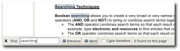
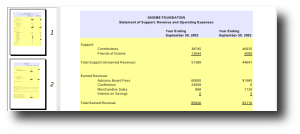
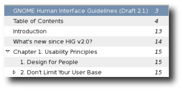

Simply a document viewer
What is Evince?
Evince is a document viewer for multiple document formats. The goal of evince is to replace the multiple document viewers that exist on the GNOME Desktop with a single simple application.
More screenshots of Evince are available in the screenshots section.
Supported Document Formats
Evince is specifically designed to support the file following formats:
- Postscript
- djvu
- tiff
- dvi
- XPS
- SyncTex support with gedit
- comics books (cbr,cbz,cb7 and cbt)
Here is the full list of supported document formats
Features
For a full list of all the Evince features check our wiki page.
Search
Integrated search displaying the number of results found and highlights the results on the page.
Page Thumbnails
Thumbnails of pages show quick reference for where you'd like to go in a document. Evince's thumbnails are available in the left sidebar of the viewer.
Page Indexing
For documents that support indexes Evince gives the option to show the document index for quick jumping from one section to another.
Contribute
There are several ways to contribute to the Evince project.
Testing provides documents you can use to test Evince and make sure it's working as it's supposed to.
Developing, instructions and hints for developing on Evince.
Help out with the wiki, subscribe to the mailing list, and join the IRC channel.
For like-minded PDF goodness with a Qt flavor, check out Okular.
Download
You should get Evince from your distribution, but if you can't find it or are looking for the latest release you might be able to get it here.
The Downloading Evince page will have the most updated information on where and how to get Evince from packages to source.
Contact
The Evince Team can be contacted any number of ways.
Check with the Evince Contact page for the most updated information.